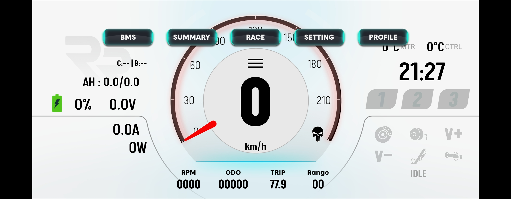
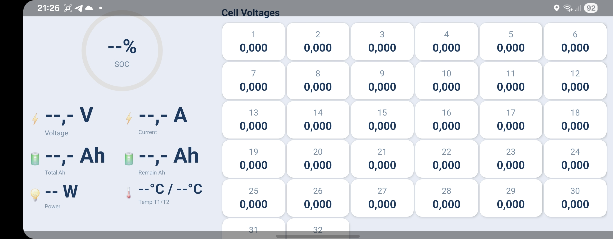
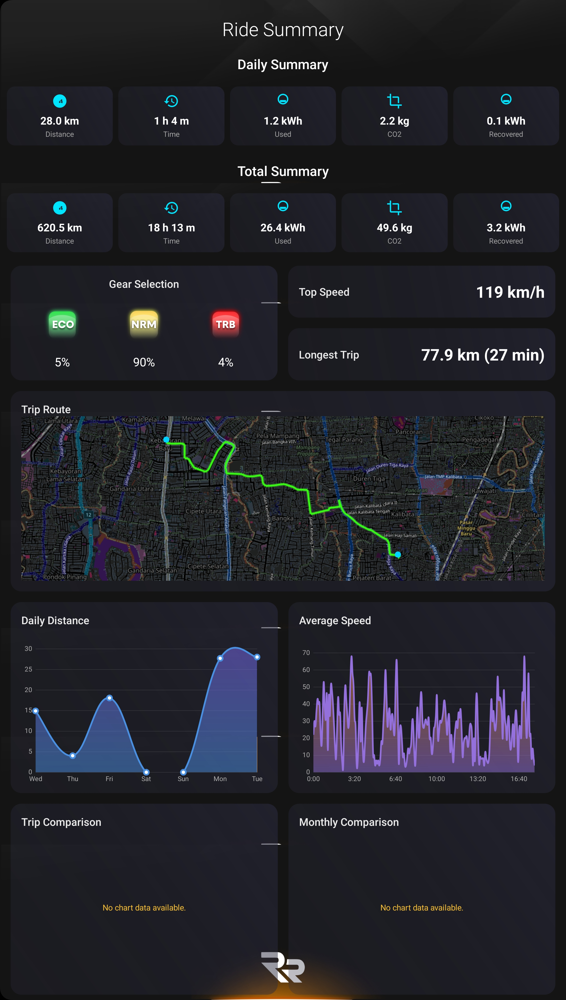
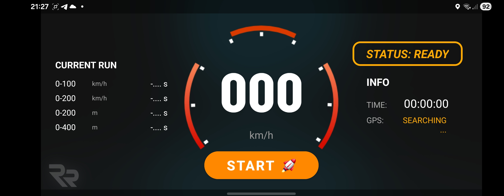
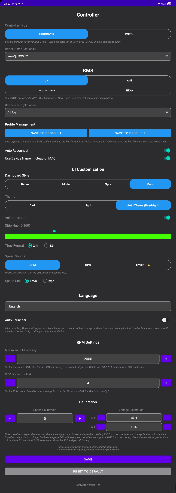
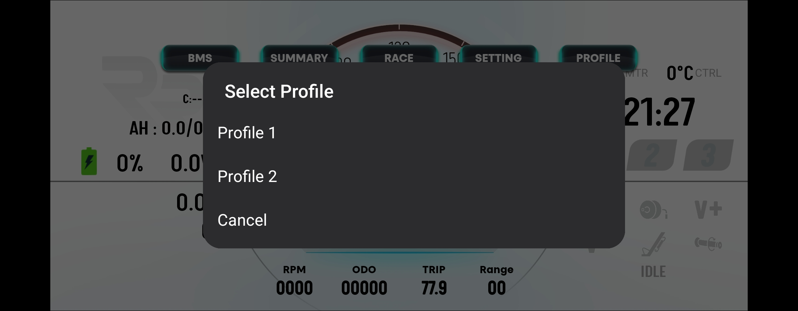

PEV Riding Dashboard — Product Overview
RRDash is a standalone Android application that turns your phone or tablet into a real-time dashboard for Personal Electric Vehicles (PEVs). It connects over Bluetooth to your motor controller and optional Battery Management System (BMS), so you can see speed, power, battery state, temperatures, trip data, and range at a glance while riding.
RRDash works with popular FOC controllers and BMS protocols used in the custom PEV community:
The primary screen shows live ride data in a configurable layout. Status indicators (C and B) show controller and BMS connection. You get:
Multiple dashboard styles (e.g. Default, Modern, Sport, Mono) and light/dark/auto theme let you match the display to your setup.

Main dashboard with speedometer, battery, trip metrics, and navigation to BMS, Summary, Race, Settings, and Profile.
When a compatible BMS is connected, RRDash can show a dedicated BMS view with state of charge, pack voltage and current, total and remaining amp-hours, power, and temperatures. For BMS that report per-cell data (e.g. many JK and ANT units), the app displays individual cell voltages in a scrollable grid so you can spot imbalance or weak cells.

BMS monitor with per-cell voltages, SOC, voltage, current, and temperature.
The summary screen aggregates your riding over time:

Ride summary with map, gear usage, top speed, and daily/total distance and energy charts.
RRDash includes a performance timer for acceleration and distance runs. You can measure and record times for 0–100 km/h, 0–200 km/h, 0–200 m, and 0–400 m. The screen shows current run placeholders, status (e.g. READY), and a START control; GPS is used where applicable for speed or distance.

Drag race timer ready to start 0–100 km/h and other acceleration or distance runs.
Profiles: Save separate controller and BMS configurations (device choices, protocol, etc.) to Profile 1 and Profile 2. Switch between them from the main dashboard so one device can serve multiple bikes or setups.
Settings: The app lets you choose controller type and BMS protocol, optional device names, dashboard style and theme, time format, speed source and unit, RPM scaling (max RPM, poles for hub vs mid drive), and voltage calibration for SOC when reading from the controller. Auto-reconnect and “use device name instead of MAC” improve usability. An optional auto launcher mode allows RRDash to appear as a launcher and auto-start after boot (when the device is unlocked), so a dedicated tablet can act as a fixed dash.

Settings: Controller type (FarDriver/Votol), BMS protocol (JK, ANT, JBD, Hexa), and UI options.

Profile selection for switching between saved controller and BMS configurations.